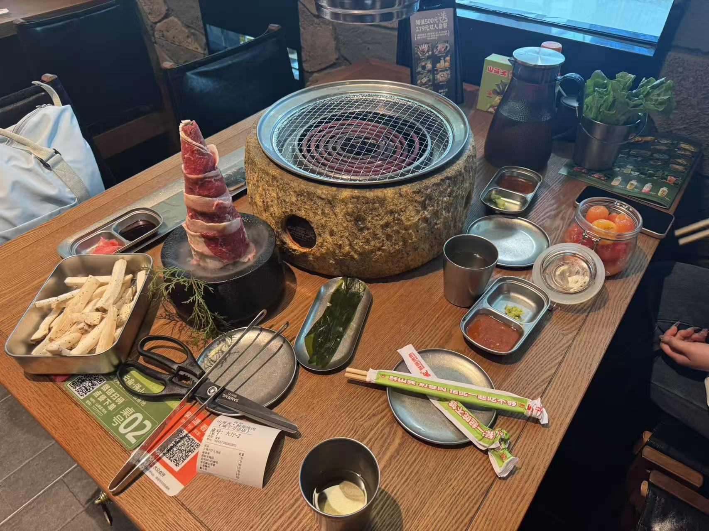

烤肉是中国传统烹饪方式，以畜肉、禽肉、海鲜及蔬菜为主要食材，通过明火或热空气熏烤制成。该饮食形式可追溯至周口店北京猿人时期的“炙”法，汉代《庖厨图》画像石已记载分工明确的烤肉场景，宴席将“燔炙”作为核心菜肴，使用竹木炭与专用烤炉“燔器”进行烤制，并发明“两歧簇 ”肉串控制生熟度。山东章丘黄家烤肉创制于明末，采用整猪烤制工艺，曾获1956年全国食品展览会✬第一名。
国内主要分支包括新疆烤肉、福建穆阳烤肉、蒙古烤全羊及东北烧烤，齐齐哈尔烤肉于2022年6月获“国际烤肉美食之都 ”称号，形成覆盖养殖、加工、冷链物流的产业链，建有烤肉产业园区与省级地方标准。现代烤肉选用新鲜肉类搭配生菜、菌菇等辅料，强调火候控制与科学膳食搭配，行业监管实施“线下排查+线上监测+专项抽检 ”组合机制。
《汉代画象全集》初集中,就有两幅图画,一幅选自朱鲔石室的画象石(见图一),一幅选自孝堂山墓道石刻(见图二),这两幅图画都是描摹古代人们烤肉的情况的,都是汉代作品,(关于朱鲔石室的年代,也有人认为晚至魏晋。)
烤肉是中国久负盛名的特色菜肴，《明宫史·饮食好尚》中就有凡遇雪，则暖室赏梅，吃炙羊肉的记载。
肉类含蛋白质丰富，一般在10-20%之间。瘦肉比肥肉含蛋白质多。肉类食品含蛋白质是优质蛋白质，不仅含有的必需氨基酸全面、数量多，而且比例恰当，接近于人体的蛋白质，容易消化吸收。